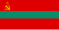
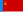

Post-Soviet states
{kind=link}
1.
 Armenia • 2.
Armenia • 2.  Azerbaijan • 3.
Azerbaijan • 3.  Belarus • 4.
Belarus • 4.  Estonia • 5.
Estonia • 5.  Georgia • 6.
Georgia • 6.  Kazakhstan • 7.
Kazakhstan • 7.  Kyrgyzstan • 8.
Kyrgyzstan • 8.  Latvia • 9.
Latvia • 9.  Lithuania • 10.
Lithuania • 10.  Moldova • 11.
Moldova • 11.  Russia • 12.
Russia • 12.  Tajikistan • 13.
Tajikistan • 13.  Turkmenistan • 14.
Turkmenistan • 14.  Ukraine • 15.
Ukraine • 15.  Uzbekistan
UzbekistanThe post-Soviet states, also referred to as the former Soviet Union (FSU)[1] or the former Soviet republics, are the independent sovereign states that emerged/re-emerged from the dissolution of the Soviet Union in 1991. Prior to their independence, they existed as Union Republics, which were the top-level constituents of the Soviet Union. There are 15 post-Soviet states in total: Armenia, Azerbaijan, Belarus, Estonia, Georgia, Kazakhstan, Kyrgyzstan, Latvia, Lithuania, Moldova, Russia, Tajikistan, Turkmenistan, Ukraine, and Uzbekistan. Each of these countries succeeded their respective Union Republics: the Armenian SSR, the Azerbaijan SSR, the Byelorussian SSR, the Estonian SSR, the Georgian SSR, the Kazakh SSR, the Kirghiz SSR, the Latvian SSR, the Lithuanian SSR, the Moldavian SSR, the Russian SFSR, the Tajik SSR, the Turkmen SSR, the Ukrainian SSR, and the Uzbek SSR. In Russia, the term "near abroad" (Russian: ближнее зарубежье, romanized: bližneye zarubežye) is sometimes used to refer to the post-Soviet states other than Russia.
Following the end of the Cold War, the international community de facto recognized Russia as the successor state to the Soviet Union as a whole, rather than to just the Russian SFSR. In contrast, the other post-Soviet states were recognized as successors only to their corresponding Union Republics. However, Russia's status as the sole legitimate successor in this capacity has been disputed by Ukraine, which has proclaimed by law that it is the successor state to both the Ukrainian SSR and the Soviet Union as a whole.[2][3][4] The question of whether Russia or Ukraine succeeded the Soviet Union in 1991 arose due to a comprehensive dispute between the two countries over what had been collective Soviet state-owned properties.[5][6][7]
The Union Republics of the Baltic states (Estonia, Latvia, Lithuania) were the first to break away from the Soviet Union by proclaiming the restoration of their national independence in 1990; they cited legal continuity from the original Baltic states, asserting that Baltic sovereignty had continued on a de jure basis due to the belligerent nature of the 1940 Soviet annexation.[8][9] Subsequently, the 12 remaining Union Republics seceded, with all of them jointly establishing the Commonwealth of Independent States (CIS) and most of them later joining the Russian-led Collective Security Treaty Organization (CSTO). On the other hand, the three Baltic states pursued a policy of near-total disengagement with the Russian-dominated post-Soviet sphere, instead focusing on integrating themselves with the European Union (EU) and the North Atlantic Treaty Organization (NATO).[10] They successfully attained NATO membership and were granted EU membership in 2004. Since the 2000s, many EU officials have stressed the importance of establishing EU Association Agreements with the other post-Soviet states. Ukraine and Georgia have actively sought NATO membership due to increasingly hostile Russian interference in their internal affairs.[11][12]
Due to the post-Soviet conflicts, several disputed states with varying degrees of international recognition have emerged within the territory of the former Soviet Union. These include: Transnistria, an unrecognized Russian-backed state in eastern Moldova; and Abkhazia and South Ossetia, two partially recognized Russian-backed states in northern Georgia. The United Nations (UN) has historically considered Russian-backed states in the "near abroad" to be illegitimate and instead views them as constituting Russian-occupied territories. The aftermath of Ukraine's Maidan Revolution saw the emergence of Russian-backed states in Ukraine in 2014: the Republic of Crimea in southern Ukraine briefly proclaimed independence before being annexed by Russia in 2014;[13] and the Donetsk People's Republic and the Luhansk People's Republic, both located in Ukraine's Donbas, were occupied and subsequently declared independence in 2014 before being formally annexed by Russia in 2022, amidst the broader Russian invasion of Ukraine.
Name
[edit]In the political language of Russia and some other post-Soviet states, the term near abroad (Russian: ближнее зарубежье, romanized: blizhnee zarubezhe) refers to the independent republics that emerged after the dissolution of the Soviet Union. Increasing usage of the term in English is connected to assertions of Russia's right to maintain significant influence in the region.[14][15][16] The concept has been compared to the Monroe Doctrine, central to American grand strategy in the 20th century.[14]
The AP Styleguide recommends avoiding use of the shorthand "former Soviet republic(s)" unless relevant to the story.[17]
Country comparison
[edit]The 15 states may be divided into four subregions. Not included in these categories are the several de facto independent states presently lacking international recognition (read below: Separatist conflicts).
| Subregion | Country | Symbols | Capital | Form of government |
Independence | Area[18] | Population | Ethnic majority, percent | Density | Notes | |||||
|---|---|---|---|---|---|---|---|---|---|---|---|---|---|---|---|
| Coat of arms | Flag | km2 | mi2 | 1989 | now | p/km2 | p/mi2 | ||||||||
| Central Asia | Kazakhstan (Republic of Kazakhstan) |
Astana | Unitary dominant-party presidential republic |
16 December 1991 | 2,724,900 | 1,052,090 | 20,075,271 | 39.7% | 7 | 18 | [19][20] | ||||
| Kyrgyzstan (Kyrgyz Republic) |
Bishkek | Unitary presidential republic |
31 August 1991 | 199,945 | 77,199 | 7,100,000 | 52.4% | 33 | 85 | [21][22] | |||||
| Tajikistan (Republic of Tajikistan) |
Dushanbe | Unitary presidential republic under a dictatorship |
9 September 1991 | 143,100 | 55,251 | 10,077,600 | 62.3% | 64 | 166 | [23][24] | |||||
| Turkmenistan (formerly the Republic of Turkmenistan) |
Ashgabat | Unitary presidential republic under a hereditary dictatorship |
27 October 1991 | 491,210 | 189,657 | 7,057,841 | 72.0% | 11 | 28 | [25][26] | |||||
| Uzbekistan (Republic of Uzbekistan) |
Tashkent | Unitary presidential republic under a dictatorship |
1 September 1991 | 444,103 | 171,469 | 37,030,884 | 71.4% | 76 | 197 | [23][27] | |||||
| Total Central Asia | 4,003,258 | 1,545,667 | 76,350,229 | 59.6% | 38.2 | 99 | |||||||||
| Eastern Europe | Belarus (Republic of Belarus) |
Minsk | Unitary presidential republic under a dictatorship |
25 August 1991 | 207,600 | 80,155 | 9,155,978 | 77.9% | 46 | 119 | [28][29] | ||||
| Moldova (Republic of Moldova) |
Chișinău | Unitary parliamentary republic |
27 August 1991 | 33,843 | 13,067 | 2,512,758 | 64.5% | 79 | 205 | [30][31] | |||||
| Russia (Russian Federation) |
Moscow | Federal semi-presidential republic under a dictatorship |
12 December 1991 | 17,098,242 | 6,601,668 | 146,171,015 | 81.5% | 9 | 23 | [32][33][34][35] | |||||
| Ukraine | Kyiv | Unitary semi-presidential republic under martial law since 2022 |
24 August 1991 | 603,700 | 233,090 | 36,744,636 | 72.7% | 72 | 186 | [36][37] | |||||
| Total Eastern Europe | 17,943,385 | 6,927,980 | 199,500,942 | 74.2% | 51.5 | 133 | |||||||||
| Baltics | Estonia (Republic of Estonia) |
Tallinn | Unitary parliamentary republic |
8 May 1990 | 45,339 | 17,505 | 1,331,796 | 61.5% | 29 | 75 | [38][39] | ||||
| Latvia (Republic of Latvia) |
Riga | Unitary parliamentary republic |
4 May 1990 | 64,562 | 24,928 | 1,882,200 | 52.0% | 30 | 78 | [23][40] | |||||
| Lithuania (Republic of Lithuania) |
Vilnius | Unitary semi-presidential republic |
11 March 1990 | 65,300 | 25,212 | 2,859,718 | 79.6% | 43 | 111 | [23][41] | |||||
| Total Baltic states | 175,201 | 67,645 | 5,998,274 | 64.4% | 34 | 88 | |||||||||
| South Caucasus | Armenia (Republic of Armenia) |
Yerevan | Unitary parliamentary republic |
21 September 1991 | 29,743 | 11,484 | 2,976,800 | 93.3% | 100 | 259 | [42][43] | ||||
| Azerbaijan (Republic of Azerbaijan) |
Baku | Unitary semi-presidential republic under a hereditary dictatorship |
18 October 1991 | 86,600 | 33,436 | 10,127,145 | 82.7% | 115 | 298 | [44][45] | |||||
| Georgia (formerly the Republic of Georgia) |
Tbilisi | Unitary parliamentary republic |
9 April 1991 | 69,700 | 26,911 | 3,688,600 | 70.1% | 53 | 137 | [23][46] | |||||
| Total South Caucasus | 186,043 | 71,832 | 16,831,069 | 82.0% | 89.3 | 231 | |||||||||
| Total former Soviet Union | 22,307,815 | 8,613,096 | 296,582,638 | 50.6% | 9 | 23 | [47] | ||||||||
{kind=link}
{kind=link}
{kind=link}
{kind=link}
{kind=link}
.svg){kind=link}
{kind=link}
{kind=link}
{kind=link}
{kind=link}
{kind=link}
{kind=link}
{kind=link}
{kind=link}
{kind=link}
Current leaders
[edit]Heads of state
[edit].jpg){kind=link}
{kind=link}
_(cropped).jpg){kind=link}
_(cropped).jpg){kind=link}
.jpg){kind=link}
_(cropped).jpg){kind=link}
{kind=link}
.jpg){kind=link}
.jpg){kind=link}
_(cropped).jpg){kind=link}
_2.png){kind=link}
.jpg){kind=link}
.jpg){kind=link}
_(cropped).jpg){kind=link}
{kind=link}
Heads of government
[edit].jpg){kind=link}
.jpg){kind=link}
.jpg){kind=link}
.jpg){kind=link}
{kind=link}
.jpg){kind=link}
.jpg){kind=link}
.jpg){kind=link}
{kind=link}
.jpg){kind=link}
.jpg){kind=link}
.jpg){kind=link}
_(cropped).jpg){kind=link}
.jpg){kind=link}
Economy
[edit]The dissolution of the Soviet Union occurred against a backdrop of economic stagnation and regression within the economy of the USSR. This period marked the breakdown of the Gosplan, the state planning agency responsible for economic planning and inter-republic economic connections, exacerbating the effects on the economies of the post-Soviet states.
Most of the formerly Soviet states began the transition to a market economy from a command economy in 1990–1991 and made efforts to rebuild and restructure their economic systems, often following neoliberal shock therapy policies, with varying results. In all, the process triggered severe economic declines, with gross domestic product (GDP) dropping by more than 40% overall between 1990 and 1995.[49] This decline in GDP was much more intense than the 27% decline that the United States suffered in the wake of the Great Depression between 1930 and 1934.[50] The reconfiguration of public finance in compliance with capitalist principles resulted in dramatically reduced spending on health, education and other social programs, leading to a sharp increase in poverty and economic inequality.[51][52] The economic shocks associated with wholesale privatization resulted in the excess deaths of roughly 1 million working age individuals throughout the former Soviet bloc in the 1990s.[53][54] A study by economist Steven Rosefielde asserts that 3.4 million Russians died premature deaths from 1990 to 1998, partly as the result of the shock therapy policies imposed by the Washington Consensus.[55]
The initial transition decline was eventually arrested, and after 1995 the economy in the post-Soviet states began to recover, with GDP switching from negative to positive growth rates. By 2007, 10 of the 15 post-Soviet states had recovered their 1991 GDP levels.[56] According to economist Branko Milanović, in 2015 many former Soviet republics and other former communist countries still have not caught up to their 1991 levels of output, including Bosnia-Herzegovina, Georgia, Kyrgyzstan, Moldova, Serbia, Tajikistan and Ukraine. He concluded that "only 1 out of 10 people living in 'transition' countries have seen a successful transition to capitalism and more democracy."[57][58] Commenting on Milanović's report in 2021, Kristen Ghodsee says this view is "essentially correct" and perhaps underestimates "the negative impacts of transition by focusing only on GDP, inequality and democratic consolidation" whereas Mitchell A. Orenstein says this view is "overly pessimistic" and notes that "Poland had done spectacularly well and living standards had increased in many countries."[59]
Most of the new states' constitutions define directly or indirectly the economic system of the countries parallel to the democratic transition of the 1990s, emphasising the free market economy. The average government debt in these countries is nearly 44%, but the deviation is great, because the lowest figure is close to 10% but the highest is 97%. The trend shows that the sovereign debt-to-GDP ratio in most of the countries has been rising. The constitutional background for taxation is similar. Central banks are often independent state institutions, which possess the monopoly on managing and implementing a state's or federation's monetary policy. Besides monetary policy, some of them also perform the supervision of the financial intermediary system.[60]
Change in gross domestic product (GDP) in constant prices, 1991–2015[61]
| Country | 1991* | 1996 | 2001 | 2006 | 2011 | 2015 | 2021 | 2022 | Turnaround year** |
|---|---|---|---|---|---|---|---|---|---|
| Central Asia | |||||||||
| Kazakhstan | 100 | 69.3 | 88.5 | 141.4 | 185.7 | 219.0 | 252.3 | 261.1 | 1996 |
| Kyrgyzstan | 100 | 58.9 | 76.1 | 89.6 | 114.4 | 133.9 | 154.5 | 169.6 | 1996 |
| Tajikistan | 100 | 34.1 | 45.2 | 56.0 | 98.1 | 124.5 | 189.5 | 205.0 | 1997 |
| Turkmenistan | 100 | 70.7 | 86.0 | 117.2 | 199.2 | 285.5 | 367.9 | 374.2 | 1998 |
| Uzbekistan | 100 | 82.9 | 102.6 | 137.5 | 208.4 | 281.2 | 363.6 | 387.5 | 1996 |
| Eastern Europe | |||||||||
| Belarus | 100 | 67.9 | 94.0 | 141.5 | 192.5 | 193.9 | 206.0 | 196.7 | 1996 |
| Moldova | 100 | 45.2 | 45.0 | 62.5 | 74.5 | 83.2 | 104.6 | 98.4 | 1997 |
| Russia | 100 | 63.1 | 74.5 | 103.3 | 118.3 | 119.8 | 135.2 | 133.3 | 1997 |
| Ukraine | 100 | 47.2 | 51.8 | 73.7 | 75.9 | 63.4 | 68.8 | 48.6 | 2000 |
| Baltic states | |||||||||
| Estonia*** | ? | 105.0 | 143.9 | 212.3 | 203.2 | 222.3 | 281.9 | 278.2 | ? |
| Latvia | 100 | 67.8 | 92.9 | 143.1 | 130.1 | 145.8 | 165.3 | 171.7 | 1993 |
| Lithuania | 100 | 64.6 | 81.5 | 119.8 | 123.9 | 139.6 | 173.2 | 180.0 | 1995 |
| South Caucasus | |||||||||
| Armenia | 100 | 63.3 | 84.2 | 154.7 | 172.5 | 202.6 | 244.2 | 276.0 | 1994 |
| Azerbaijan | 100 | 42.7 | 65.2 | 150.2 | 241.1 | 276.5 | 269.6 | 282.1 | 1996 |
| Georgia | 100 | 39.8 | 49.8 | 74.1 | 93.2 | 109.3 | 136.0 | 150.3 | 1995 |
*Economy of most Soviet republics started to decline in 1989–1990, thus indices for 1991 do not match pre-reform maximums.
**The year when GDP decline switched to GDP growth
***World bank publishes GDP data for Estonia only from 1995 onwards. Figures for Estonia are relative to 1995 GDP.
List of the present gross domestic product (GDP) (figures are given in 2023 United States dollars for the year 2023 according to the IMF[62])
| Country | Nominal (millions USD) |
Nominal per capita (USD) |
PPP (millions USD) |
PPP per capita (USD) |
|---|---|---|---|---|
| Post-Soviet States | 3,035,843 | 10,230 | 7,496,732 | 25,280 |
| 23,725 | 8,007 | 57,740 | 19,489 | |
| 70,030 | 6,757 | 193,478 | 18,669 | |
| 73,543 | 7,944 | 217,040 | 23,447 | |
| 41,551 | 31,209 | 61,757 | 46,385 | |
| 27,947 | 7,600 | 80,611 | 21,922 | |
| 245,695 | 12,306 | 652,597 | 32,688 | |
| 12,309 | 1,736 | 43,318 | 6,250 | |
| 47,398 | 25,136 | 75,910 | 40,256 | |
| 78,346 | 28,094 | 137,389 | 49,266 | |
| 15,829 | 6,342 | 42,028 | 16,840 | |
| 2,062,649 | 14,403 | 4,988,829 | 34,837 | |
| 12,796 | 1,277 | 52,997 | 5,293 | |
| 82,649 | 13,065 | 126,355 | 19,974 | |
| 148,712 | 4,654 | 444,194 | 13,901 | |
| 92,332 | 2,563 | 371,346 | 10,308 |
Developmental progress
[edit]The post-Soviet states listed according to their Human Development Index scores in 2021:[63]
.png){kind=link}
Very High Human Development:
 Estonia: 0.890
Estonia: 0.890 Lithuania: 0.875
Lithuania: 0.875 Latvia: 0.863
Latvia: 0.863 Russia: 0.822
Russia: 0.822 Kazakhstan: 0.811
Kazakhstan: 0.811 Belarus: 0.808
Belarus: 0.808 Georgia: 0.802
Georgia: 0.802
High Human Development:
 Ukraine: 0.773
Ukraine: 0.773 Moldova: 0.767
Moldova: 0.767 Armenia: 0.759
Armenia: 0.759 Azerbaijan: 0.745
Azerbaijan: 0.745 Turkmenistan: 0.745
Turkmenistan: 0.745 Uzbekistan: 0.727
Uzbekistan: 0.727
Medium Human Development:
 Kyrgyzstan: 0.692
Kyrgyzstan: 0.692 Tajikistan: 0.685
Tajikistan: 0.685
Regional organizations
[edit]{kind=link}
A number of regional organizations and cooperating blocs have sprung up since the dissolution of the Soviet Union. Only organizations that are mainly (or completely) composed of post-Soviet states are listed in this section; organizations with wider memberships are not discussed. The 15 post-Soviet states are divided in their participation to the regional blocs:
- Belarus, Russia and Ukraine founded the Commonwealth of Independent States (CIS) in December 1991. It was conceived as a successor organization to the USSR, and in December 1993 it included 12 of the 15 former Soviet republics (except the three Baltic states).[64] It currently consists of nine of the 15 former Soviet republics, with one associate state (Turkmenistan). Georgia withdrew from the CIS in August 2008, while Ukraine stopped participating from the CIS in May 2018.
- The three Baltic states have not sought membership in any of these post-Soviet organizations, seeking and achieving membership in the European Union and NATO instead, although their electricity and rail systems remain closely connected with former Soviet organizations. The sole exception to the above has been their recent membership in the Community of Democratic Choice.
- The Central Asian states of Kazakhstan, Kyrgyzstan, Tajikistan and Uzbekistan (as well as Belarus) are members of the CIS and participate in several regional organizations that have Russia as a primary mover. Such organizations are the Eurasian Economic Community (later merged with Eurasian Economic Union, which Tajikistan and Uzbekistan are not members of), Collective Security Treaty Organization and the Shanghai Cooperation Organisation. The last two groups only became distinct once Uzbekistan withdrew from GUAM and sought membership in EurAsEc and CSTO (which it subsequently withdrew from in 2008 and 2012, respectively).
- Armenia, besides its membership in CIS participates in Collective Security Treaty Organization and the Eurasian Economic Union.
- Moldova and Azerbaijan participate in the CIS but other than that they mostly cooperate within regional organizations that are not dominated by Russia. Such organizations are GUAM and the Community of Democratic Choice. Although Ukraine is one of the three founding countries of the CIS, it is legally not a member because it has never ratified the 1993 CIS Charter.[64]
- Turkmenistan is an associate member of CIS (having withdrawn from full membership in August 2005)[65] and a member in the Economic Cooperation Organization; it has not sought closer integration in any of the other Western or post-Soviet organizations.
- In 2008, Georgia notified the CIS executive bodies of its decision to leave the regional organization,[66][67] and according to the CIS Charter (sec. 1, art. 9) this decision went into force 12 months after the notification date.[68]
Commonwealth of Independent States
[edit]The Commonwealth of Independent States (CIS) consists of 10 former Soviet Republics that differ in their membership status. As of December 2010, 9 countries have ratified the CIS charter and are full CIS members (Armenia, Azerbaijan, Belarus, Moldova, Kazakhstan, Kyrgyzstan, Russia, Tajikistan, Uzbekistan), one country (Turkmenistan) is an associate member and two countries (Georgia, Ukraine) left the organization in 2009 and in 2018. In 2014, Ukraine declined its CIS chairmanship and considered withdrawal from the organization.[69]
In 1994, the CIS countries agreed to create a free trade area, but the agreements were never signed. On 19 October 2011, Armenia, Belarus, Kazakhstan, Kyrgyzstan, Moldova, Russia, Tajikistan and Ukraine signed a free trade agreement.[70] Uzbekistan joined the free trade area in 2013.[citation needed]
Eurasian Economic Community
[edit]{kind=link}
The Eurasian Economic Community (EURASEC), formerly the CIS Customs Union, was established by Russia, Belarus, Kazakhstan, Kyrgyzstan and Tajikistan. Ukraine and Moldova have observer status in the community; however, Ukraine has declared its desire not to become a full member state. Because having common borders with the rest of the community is a prerequisite for full membership, Moldova is barred from seeking it. Uzbekistan applied for membership in October 2005,[citation needed] when the process of merging Central Asian Cooperation Organization and the Eurasian Economic Community began; it joined on 25 January 2006. Uzbekistan subsequently suspended its membership in 2008.[citation needed]
On 10 October 2014 an agreement on the termination of the Eurasian Economic Community was signed in Minsk after a session of the Interstate Council of the EAEC. The Eurasian Economic Community was terminated from 1 January 2015 in connection with the launch of the Eurasian Economic Union.[citation needed]
Customs Union of Belarus, Kazakhstan and Russia
[edit]
Russia, Belarus, Kazakhstan created a customs union that entered into force in July 2010. Ukraine, Kyrgyzstan and Tajikistan indicated interest in joining at the time.[citation needed] Russia has been eager for Armenia, Moldova and Ukraine to join the custom union instead of the European Union, and the Moldovan break-away state of Transnistria has supported this. In 2013, Kyrgyzstan and Armenia announced plans to seek membership, but division over the issue in Ukraine led to the Revolution of Dignity after the Ukrainian government backed out of an EU Eastern Partnership in favor of the union. In 2014, voters in the Moldovan autonomous region of Gagauzia rejected closer ties to the EU in favor of the union.[71]
On 1 January 2012, Russia, Kazakhstan and Belarus established the Single Economic Space which ensures the effective functioning of a single market for goods, services, capital and labour, and to establish coherent industrial, transport, energy and agricultural policies.[72][73] The agreement included a roadmap for future integration and established the Eurasian Economic Commission (modelled on the European Commission).[74] The Eurasian Economic Commission serves as the regulatory agency for the Eurasian Customs Union, the Single Economic Space and the Eurasian Economic Union.[72]
Eurasian Economic Union
[edit]{kind=link}
The Eurasian Economic Union is an economic union of post-Soviet states. The treaty aiming for the establishment of the EAEU was signed on 29 May 2014 by the leaders of Belarus, Kazakhstan and Russia, and came into force on 1 January 2015.[75] Treaties aiming for Armenia's and Kyrgyzstan's accession to the Eurasian Economic Union were signed on 9 October 2014 and 23 December respectively. Armenia's accession treaty came into force on 2 January 2015.[76] Kyrgyzstan ratified its accession's treaty in May 2015, and it came into force in August 2015.[77][78][79][80][81][82] Moldova and Tajikistan are prospective members.[83][84]
Collective Security Treaty Organization
[edit]{kind=link}
Seven CIS member states, namely Russia, Belarus, Kazakhstan, Kyrgyzstan, Tajikistan, Uzbekistan and Armenia, have enhanced their military cooperation, establishing the Collective Security Treaty Organization (CSTO), this being an expansion of the previous Collective Security Treaty (CST). Uzbekistan which (alongside Georgia and Azerbaijan) withdrew from the CST in 1999, joined GUAM. Then in 2005, it withdrew from GUAM and joined the CSTO in 2006. On 28 June 2012, Uzbekistan suspended its membership in the CSTO.[85]
North Atlantic Treaty Organization
[edit]{kind=link}
Three former Soviet states are members of NATO: Estonia, Latvia and Lithuania. Georgia, where both public opinion and the ruling government favor NATO membership, is in the Intensified Dialogue program with NATO. Ukraine also declared joining NATO as its geopolitical goal once again in 2017 (the first time being right after the Orange Revolution and in the beginning of presidency of Viktor Yushchenko), after the presidency of Viktor Yanukovych, during which the government officially declared non-alignment status and ceased to seek NATO membership.[86][87]
Other states in the Partnership for Peace and Individual Partnership Action Plan program include Armenia, Azerbaijan, Belarus, Kazakhstan, Kyrgyzstan, Moldova, Russia, Tajikistan, Turkmenistan and Uzbekistan.
GUAM
[edit]Four member states, namely Georgia, Ukraine, Azerbaijan and Moldova, established the GUAM group that was largely seen as intending to counter Russian dominance in the region. Notably, these four nations do not participate in any of the other regional organizations that sprang up in the region since the dissolution of the Soviet Union (other than the CIS).
Union State
[edit]{kind=link}
The Union State of Russia and Belarus was originally formed on 2 April 1996 under the name Commonwealth of Russia and Belarus, before being tightened further on 8 December 1999. It was initiated by the president of Belarus, Alexander Lukashenko. On paper, the Union of Russia and Belarus intends further integration, beyond the scope of mere cooperation, including the introduction of the rouble as a common currency.
Other regional organizations
[edit]Economic Cooperation Organization
[edit]{kind=link}
The Economic Cooperation Organization was originally formed in 1985 by Turkey, Iran and Pakistan but in 1992 the organization was expanded to include Afghanistan and the six primarily Muslim former Soviet republics: Azerbaijan, Kazakhstan, Kyrgyzstan, Tajikistan, Turkmenistan and Uzbekistan.
Community for Democracy and Rights of Nations
[edit]The post-Soviet disputed states of Abkhazia, South Ossetia and Transnistria are all members of the Community for Democracy and Rights of Nations which aims to forge closer integration.
Community of Democratic Choice
[edit]The Community of Democratic Choice (CDC) was formed in December 2005 at the primary instigation of Ukraine and Georgia, and composed of six post-Soviet states (Ukraine, Georgia, Moldova, Estonia, Latvia and Lithuania) and three other countries of Eastern and Central Europe (Slovenia, Romania and North Macedonia). The Black Sea Forum (BSF) is a closely related organization. Observer countries include Armenia, Bulgaria and Poland.
Just like GUAM before it, this forum is largely seen as intending to counteract Russian influence in the area. This is the only international forum centered in the post-Soviet space in which the Baltic countries also participate. In addition, the other three post-Soviet states in it are all members of GUAM.
Shanghai Cooperation Organisation
[edit].svg){kind=link}
The Shanghai Cooperation Organisation (SCO), is composed of China and five post-Soviet states, namely Russia, Kazakhstan, Kyrgyzstan, Tajikistan and Uzbekistan. The organization was founded in 2001, though its predecessor, the Shanghai Five grouping, has existed since 1996. Its aims revolve around security-related issues such as border demarcation, terrorism and energy.[88]
Economic cooperation organizations
[edit]- Central European Free Trade Agreement (CEFTA) with Moldova (it includes also non post-Soviet countries of the former Yugoslavia; previously, also included other Central European countries that left CEFTA when joining the European Union; CEFTA plays a role in Central Europe similar to what European Free Trade Association (EFTA) provides in Western Europe for non EU-members; this alliance an economical organization with strong cooperation with the European Union, for countries that do not want to participate in EurAsEC centered on Russia but that are seeking alliances to the West); even if Moldova is the only CEFTA country that is still within a weakening CIS, it no longer participates to the CSTO for most of the common security policy (but cannot join the EU because of incompatibility with WEU stability rules and the unsolved problem of Transnistria) but can still benefit from the Free Trade Area notably with Romania and Bulgaria (in the EU).
- Black Sea Economic Cooperation (BSEC) with Russia, Georgia, Ukraine, Azerbaijan, Moldova, Turkey, Albania, Greece, Romania, Bulgaria, Serbia and Armenia (an economic organisation closely related to the SCO but more focused regionally to include also Armenia; it also aims for the harmonious development of democracy for increasing the commerce in South-East Europe and includes some EU members, so it cannot be a regional free-trade union).
- The European Union (EU) with the three Baltic countries that were the first ones to declare independence from the former USSR have never joined CIS after the collapse of USSR (it includes also now some post-communist countries in Central Europe, that have left CEFTA when entering the EU : Poland, Czech Republic, Slovakia, Hungary, Romania, Bulgaria and Slovenia).
Political integration and security alliances
[edit]- Stability Pact for South Eastern Europe (SPforSEE) with Moldova (similar in structure to CEFTA, but does not focus on economy but security, for those countries that are not NATO members); this organization largely cooperates with NATO, and is related to the group of observers at Western European Union (WEU).
- The North Atlantic Treaty Organization (NATO), for Estonia, Latvia, Lithuania, Poland and Central European countries that have also joined the EU (the EU membership includes also WEU membership because they follow the Common Foreign and Security Policy and European Security and Defence Policy policies shared now by the EU, the WEU and all European NATO members).
- The other remaining countries are those part of the former Yugoslavia, but their recent conflict and political tensions still does not allow them to cooperate efficiently for their political integration and for their mutual security; in addition, they still do not have full sovereignty in this domain (some of them are still under surveillance by EU or NATO, as mandated by UNO). They still need to find an internal stability and they can collaborate economically with the help of other organizations focusing on economy or political cooperation and development. However, a more limited cooperation for security is possible through their membership to the larger Organization for Security and Co-operation in Europe (OSCE).
- The only exception is Belarus (whose post-soviet democratic transition did not occur) that still rejects political integration, and all security alliances with NATO, OSCE, WEU or other countries in Europe other than Russia (which the process of reintegration of Belarus has been tightened in almost all domains).
Organizations in other domains
[edit]- Southeast European Cooperation Process (SEECP) with Moldova (similar to SPforSEE, but focuses on political integration than cooperation for security, and to CEFTA but does not focus on trade).
- Southeast European Cooperative Initiative (SECI) with Moldova (closely related to SEECP).
- Central European Initiative (CEI) with Moldova, Ukraine and Belarus (and also Central and South-Western European countries in the European Union; it aims at helping Eastern European countries to reach the EU standards and cooperate politically and find a better economic development and a strong, working but more democratic legal system); it is the only regional organization where Belarus is still a member (but the political cooperation with Belarus is almost stalled, as it is the only country of the former Communist bloc country that balances in favor of stronger cooperation with Russia and against integration with EU and NATO; however, Belarus remains isolated and still does not cooperate too in the SCO group led by Russia and China).
- Black Sea Forum for Partnership and Dialogue (BSF) with Georgia, Ukraine, Azerbaijan, Moldova and Armenia (also non post-soviet countries that are NATO members, interested in their maintaining political stability and avoiding conflicts in the region: Romania, Bulgaria and Turkey, whose first two are also now EU and CEI members, using EU rules for their political development); however, this organization does not focus on helping countries to join the EU, but reaching common standards and good governance and internal stability and democracy like in the CEI.[citation needed]
- Community for Democracy and Rights of Nations
Other organizations
[edit]Apart from above, the former Soviet republics also hold membership in a number of multinational organizations such as:
- FIBA
- FIFA
- International Ice Hockey Federation
- International Olympic Committee
- International Paralympic Committee
- Kontinental Hockey League (Belarus, Kazakhstan, Russia)
- UNESCO
- World Health Organization
- World Trade Organization
Politics
[edit]Regarding political freedom in the former Soviet republics, Freedom House's 2021 report listed the following:
- Estonia, Latvia and Lithuania as "free" countries.
- Armenia, Georgia, Moldova and Ukraine were listed as "partly free".
- Azerbaijan, Belarus, Kazakhstan, Kyrgyzstan, Russia, Tajikistan, Turkmenistan and Uzbekistan were listed as "not free".
Similarly, the Press Freedom Index published by Reporters Without Borders in 2022 recorded the following as regards press freedom:[89]
- Estonia – "Good situation"
- Latvia, Lithuania, Moldova – "Satisfactory situation"
- Armenia, Georgia, Kyrgyzstan, Ukraine – "Problematic situation"
- Kazakhstan, Tajikistan, Uzbekistan – "Difficult situation"
- Azerbaijan, Belarus, Russia, Turkmenistan – "Very serious situation"
It has been remarked that several post-Soviet states did not change leadership for decades since their independence, such as Nursultan Nazarbayev in Kazakhstan until his surprise resignation in 2019,[90] and Islam Karimov in Uzbekistan, until his death in September 2016.[91] All of these had originally more limited terms but through decrees or referendums prolonged their stay in office (a practice also followed by Presidents Alexander Lukashenko of Belarus and Emomali Rahmon of Tajikistan). Askar Akayev of Kyrgyzstan had likewise served as President since its independence until he was forced to resign as a result of the Kyrgyz revolution of 2005.[92] Saparmurat Niyazov in Turkmenistan ruled from independence until his death in 2006, creating a personality cult around himself.[93] His successor, Gurbanguly Berdimuhamedov, has maintained a personality cult of his own that has replaced the worshipping of Niyazov.[94]
The issue of dynastical succession has been another element affecting the politics of some post-Soviet States. Heydar Aliyev, after constructing an extensive and ongoing cult of personality, handed the Presidency of Azerbaijan to his son, Ilham Aliyev. Theories about the children of other leaders in Central Asia being groomed for succession abound.[95] The participation of Akayev's son and daughter in the 2005 Kyrgyz parliamentary elections boosted fears of dynastic succession being used in Kyrgyzstan as well, and may have contributed to the anti-Akayev climate that led to his overthrow.
Separatist conflicts
[edit]Economic, political, national, military and social problems have all been factors in separatism in the post-Soviet space. In many cases, problems due to factors such as ethnic divisions existed before the fall of the Soviet Union, and upon the fall of the union were brought into the open.[96] Such territories and resulting military conflicts have so far been:
Current self-declared states
[edit]| Region | Country name | Coat of arms
|
Flag | Capital | Independence | Recognition | Area[18] | Population | Density | |||
|---|---|---|---|---|---|---|---|---|---|---|---|---|
| km2 | mi2 | p/km2 | p/mi2 | |||||||||
| Eastern Europe | Transnistria (Transnistrian Moldavian Republic) |
 | Tiraspol | 2 September 1990 (from Moldavian SSR) |
Not recognised | 4,163 | 1,607 | 306,000 | 73.5 | 190.4 | ||
| South Caucasus | South Ossetia (Republic of South Ossetia – the State of Alania) |
Tskhinval | 29 May 1992 (from Georgia) |
Limited | 3,900 | 1,506 | 53,532 | 13.73 | 35.6 | |||
| Abkhazia (Republic of Abkhazia) |
Sukhumi | 23 July 1992 (from |
8,660 | 3,344 | 254,246 | 29.36 | 76.0 | |||||
{kind=link}
.svg){kind=link}
{kind=link}
{kind=link}
 Transnistria, which is de facto independent from Moldova. It declared independence in 1990, due to its majority Russian-speaking population fearing union with Romania. A ceasefire between Transnistrian forces and Moldovan forces has been in place since 1992, enforced by the presence of Russian forces in Transnistria.[97]
Transnistria, which is de facto independent from Moldova. It declared independence in 1990, due to its majority Russian-speaking population fearing union with Romania. A ceasefire between Transnistrian forces and Moldovan forces has been in place since 1992, enforced by the presence of Russian forces in Transnistria.[97] South Ossetia, which is de facto independent from Georgia. The region declared its intent to seek independence in 1990, leading to a conflict which led to a ceasefire in 1992. Separatism became powerful after the election of Georgian President Mikhail Saakashvili in 2004, and a referendum in 2006 was in favour of declaring independence. The 2008 war between Georgian forces and the separatist and Russian forces led to Russia's recognition of South Ossetia's independence.[98]
South Ossetia, which is de facto independent from Georgia. The region declared its intent to seek independence in 1990, leading to a conflict which led to a ceasefire in 1992. Separatism became powerful after the election of Georgian President Mikhail Saakashvili in 2004, and a referendum in 2006 was in favour of declaring independence. The 2008 war between Georgian forces and the separatist and Russian forces led to Russia's recognition of South Ossetia's independence.[98] Abkhazia, which is de facto independent from Georgia. Tensions in the area broke out when Georgia sent in troops in 1992 to control groups who wanted separation. The troops and most of the Georgian and Mingrelian speaking population were forced out in 1993, and the region declared independence in 1999. The 2008 war between Georgian forces and the separatist and Russian forces led to Russia's recognition of Abkhazia's independence.[99]
Abkhazia, which is de facto independent from Georgia. Tensions in the area broke out when Georgia sent in troops in 1992 to control groups who wanted separation. The troops and most of the Georgian and Mingrelian speaking population were forced out in 1993, and the region declared independence in 1999. The 2008 war between Georgian forces and the separatist and Russian forces led to Russia's recognition of Abkhazia's independence.[99]
Former self-declared states
[edit]| Region | Country name | Coat of arms
|
Flag | Capital | Independence | Fate | Area[18] | Population | Density | |||
|---|---|---|---|---|---|---|---|---|---|---|---|---|
| km2 | mi2 | p/km2 | p/mi2 | |||||||||
| Eastern Europe | Gagauzia (Gagauz Republic) |
Comrat | 19 August 1990 (from Moldavian SSR) |
Reincorporated into Moldova with an autonomous status in 1995 |
1,848 | 714 | 134,132 | 72.58 | 188.0 | |||
| Crimea (Republic of Crimea) |
Simferopol | 11 March 2014 (from |
Occupied by Russia before an illegal referendum and annexation 18 March 2014 | 26,100 | 10,077 | 1,913,731 | 73.32 | 189.9 | ||||
| Donetsk (Donetsk People's Republic) |
Donetsk | 12 May 2014 (from |
Partly occupied by Russia before sham referendums and declared "annexation" in September 2022 | 7,853 | 3,032 | 2,302,444 | 293.19 | 759.4 | ||||
| Luhansk (Luhansk People's Republic) |
Luhansk | 12 May 2014 (from |
8,377 | 3,234 | 1,464,039 | 174.77 | 452.7 | |||||
| Tatarstan (Republic of Tatarstan) |
Kazan | 21 March 1992 (from Russia) |
Reincorporated into Russia after peaceful negotiations in 1994 |
68,000 | 26,255 | 3,786,488 | 55.68 | 144.2 | ||||
| South Caucasus | Abkhazia (Abkhaz Autonomous Soviet Socialist Republic) |
Sukhumi | 25 August 1990 (from Georgian SSR) |
Renamed to the Republic of Abkhazia in 23 July 1992 | 8,600 | 3,320 | 525,061 | 61.05 | 158.1 | |||
| Artsakh (Republic of Artsakh) |
Stepanakert | 6 January 1992 (from |
Disestablished in January 2024 | 3,000 | 1,158 | 120,000 | 13.17 | 34.1 | ||||
| Chechnya (Chechen Republic of Ichkeria) |
Grozny | 1 November 1991 (from  Russian SFSR) |
Disestablished in 2000 after the Second Chechen War |
15,300 | 5,907 | 1,103,686 | 72.14 | 186.8 | ||||
| Talysh-Mughan (Talysh-Mughan Autonomous Republic) |
Lankaran | 21 June 1993 (from |
Reincorporated into Azerbaijan in August 1993 | 7,465 | 2,882 | 960,000 | 128.6 | 333.1 | ||||
{kind=link}
{kind=link}
{kind=link}
{kind=link}
{kind=link}
.svg){kind=link}
{kind=link}
{kind=link}
{kind=link}
- Gagauz Republic, declared itself the "Gagauz Autonomous Soviet Socialist Republic" within Moldova on 12 November 1989, and the Gagauz Republic, separate from Moldova but still within the Soviet Union, on 19 August 1990; reintegrated into Moldova as an autonomous region through a law passed on 23 December 1994 which entered into force on 14 January 1995.[100][101][102]
 Tatarstan, declared itself to be a sovereign state after a referendum on 21 March 1992. Negotiations with Russia led to the signing of a treaty in 1994 which ended Tatarstan's de facto independence, but reserved significant autonomy for the Tatarstan government. In 2002 a new constitution was enacted for Tatarstan which removed the prior constitution's declaration that Tatarstan was a sovereign state.
Tatarstan, declared itself to be a sovereign state after a referendum on 21 March 1992. Negotiations with Russia led to the signing of a treaty in 1994 which ended Tatarstan's de facto independence, but reserved significant autonomy for the Tatarstan government. In 2002 a new constitution was enacted for Tatarstan which removed the prior constitution's declaration that Tatarstan was a sovereign state. Republic of Crimea. The entire Crimean Peninsula has been outside the control of Ukrainian authorities since late February 2014, when Russian special forces, some disguised as "armed self-defence forces" occupied the peninsula and seized the local parliament.[103][104][105]: 11 In March 2014, a popular referendum in favor of accession to Russia was held in Crimea and Sevastopol, although Ukraine[106] and most of the international community refused to recognize the vote. The next day, the Republic of Crimea declared independence, and within days Russia absorbed the peninsula. Ukraine continues to claim Crimea as an integral part of its territory.
Republic of Crimea. The entire Crimean Peninsula has been outside the control of Ukrainian authorities since late February 2014, when Russian special forces, some disguised as "armed self-defence forces" occupied the peninsula and seized the local parliament.[103][104][105]: 11 In March 2014, a popular referendum in favor of accession to Russia was held in Crimea and Sevastopol, although Ukraine[106] and most of the international community refused to recognize the vote. The next day, the Republic of Crimea declared independence, and within days Russia absorbed the peninsula. Ukraine continues to claim Crimea as an integral part of its territory.- Chechen Republic of Ichkeria, where Dzhokhar Dudayev declared independence from Russia in 1991, leading to a violent war between local separatist forces and the Russian army. Russia first invaded in 1994, withdrawing after a deal for increased autonomy was granted in 1996. Tensions have continued in the years since then, and the conflict has spilled over into neighbouring regions such as Dagestan, Ingushetia and North Ossetia–Alania. Russia claims that the situation in Chechnya has normalised.[107]
- Donetsk People's Republic and Luhansk People's Republic, states which declared independence from Ukraine in 2014. The two breakaway states were recognized by Russia on 21 February 2022, followed by North Korea and Syria, and they were subsequently annexed by Russia on 4 October of that year after a controversial referendum that were recognized as sham referendums.
 Republic of Artsakh, which declared independence from Azerbaijan. Ethnic conflict between Armenians and Azerbaijanis began in 1988, and expanded into a war which lasted until a ceasefire in 1994. Sporadic attempts at negotiating a final peace and sporadic bursts of violence have continued up until September 2023 when Azerbaijan launched another military offensive. The government of Artsakh agreed to disarm and enter talks with Azerbaijan, prompting a flight of ethnic Armenians from the area. The president of Artsakh also signed a decree calling for the republic to dissolve itself by 1 January 2024.[108][109][110]
Republic of Artsakh, which declared independence from Azerbaijan. Ethnic conflict between Armenians and Azerbaijanis began in 1988, and expanded into a war which lasted until a ceasefire in 1994. Sporadic attempts at negotiating a final peace and sporadic bursts of violence have continued up until September 2023 when Azerbaijan launched another military offensive. The government of Artsakh agreed to disarm and enter talks with Azerbaijan, prompting a flight of ethnic Armenians from the area. The president of Artsakh also signed a decree calling for the republic to dissolve itself by 1 January 2024.[108][109][110]- Talysh-Mughan, declared autonomy within Azerbaijan, that lasted from June to August 1993.[111]
Civil wars
[edit]Civil wars unrelated to separatist movements have occurred twice in the region:
- The Georgian Civil War between the forces of Zviad Gamsakhurdia and Eduard Shevardnadze. The war ended after Russian forces intervened in support of Shevardnadze's government, which in turn agreed to join the Commonwealth of Independent States.
- The Tajikistani Civil War that lasted between 1992 and 1997.
Colour revolutions
[edit]Since 2003, a number of (largely) peaceful "colour revolutions" have happened in some post-Soviet states after disputed elections, with popular protests bringing into power the former opposition.
- The Rose Revolution in Georgia, leading to the resignation of Eduard Shevardnadze
- The Orange Revolution in Ukraine, bringing into power Viktor Yushchenko and toppling the pro-Russian leader Viktor Yanukovych
- The Tulip Revolution in Kyrgyzstan, leading to the resignation of Askar Akayev
- The Velvet Revolution in Armenia, leading to the resignation of Serzh Sargsyan
Russian population in post-Soviet states
[edit]There is a significant Russophone population in most of the post-Soviet states, whose political position as an ethnic minority varies from country to country.[112] While Belarus, Kazakhstan and Kyrgyzstan, in addition to Russia, have kept Russian as an official language, the language lost its status in other post-Soviet states after the end of the Soviet Union. It maintains semi-official status in all CIS member states, because it is the organisation's official working language, but in the three Baltic states, the Russian language is not recognized in any official capacity. Georgia, since its departure from the CIS in 2009, has begun operating its government almost exclusively in the Georgian language.
Religion
[edit]While the Soviet system placed severe restrictions on religious intellectual life, traditions continued to survive. After the dissolution of the Soviet Union, Islamic movements have emerged alongside ethnic and secular ones. Vitaly Naumkin gives the following assessment: "Throughout the time of change, Islam has served as a symbol of identity, a force for mobilization, and a pressure for democracy. This is one of the few social disasters that the church has survived, in which it was not the cause. But if successful politically, it faces economic challenges beyond its grasp."[113]
The Central Asian states (Kazakhstan, Kyrgyzstan, Tajikistan, Turkmenistan and Uzbekistan) plus Azerbaijan in the Southern Caucasus are Muslim, except for their dwindling Russian and other European minorities. The Baltic countries are historically Western Christian (Protestant and Roman Catholic), which adds another layer of pro-Western orientation to those countries, although the majority of what has been the traditionally Protestant population there (in Estonia and northern Latvia) is now relatively irreligious. The dominant religion in the other former Soviet countries (Armenia, Belarus, Georgia, Moldova, Russia and Ukraine) is Eastern Orthodox Christianity. In most countries, religiosity has increased since the Soviet collapse.[citation needed]
LGBT rights
[edit]LGBT people may encounter difficulties not shared by non-LGBT residents. In Transnistria homosexuality is illegal. In some other regions, such as Russia and Ukraine, homosexual actions are legal, but there is still discrimination and bias towards the gay community.
Environment
[edit]The Soviet Union inherited environmental problems from the pre-Revolutionary era that it blamed on the failings and evils of capitalism.[114] The Soviet Union promoted environmental sentiments; it had a constitutional clause on environmental protection and promoted the idea that, by ending capitalism, environmental problems would cease to arise.[114][115] Some environmental strides were made, such as the banning of lead-based paint and leaded gasoline in the 20th century.[115] However, the prioritization of industrial production over environmental protection meant that many environmental issues were left to post-Soviet institutions, particularly air and water pollution in the Northern regions where industrialism was heaviest.[116] The Northern countries of Central Europe, including Poland, East Germany and Czechoslovakia formed what is referred to as the "black triangle" due to their heavy use of brown coal for energy.[116] Environmental degradation in the former Soviet Union is attributed to rapid industrialization and a lack of institutions that were able to curb pollution levels.[117] Many republics of the Soviet Union experienced soil degradation due to collective farming[116] In the 1970s, a Soviet study revealed vast technological inefficiencies in the USSR: compared to the West, the USSR created double the amount of pollutants for each product produced, and quadruple the amount of pollution for each car.[114] The Soviet regime also withheld information regarding the environmental problems facing them, and when these problems became evident to the public, authorities continued to attribute them to capitalism.[114] The Chernobyl disaster was a turning point in which the Soviets had to take responsibility for a huge environmental disaster amid pressures to disclose information regarding its causes and consequences, and this led to a broader discussion about the state of the environment as well as to concerns about nuclear energy.[114] As general unrest grew in the final years of the Soviet Union, the public began to demand environmental reform as part of their resistance to Communism. Many citizens wanted to capitalize on the political turnover to achieve an environmentalist agenda.[118] There was a push away from coal and towards cleaner forms of energy in the 1980s,[116] and 1986–1987 saw the first wave of environmental protests.[114] Village Prose literature by authors such as Valentin Rasputin fostered an environmentalist sentiment.[114] The Soviet "Green Front" was a populist environmental movement that had five subgroups: the Social-Ecological Union which promoted environmental solutions based in ecological practice, the Ecological Union which advocated for greater monitoring of pollution, the Ecological Foundation that sought to create funds through pollution taxes, the Ecological Society of the Soviet Union that called for a return to the Russian way of life that was closely connected to nature, and the All-Union Movement of Greens which was a culminating body of the four preceding groups.[114] Russian oil-drilling and the military were among the things they took issue with.[114] Critics of the Green Front opposed their effects on the chemical industry and claimed that it led to reduced commercial product availability of items such as soap, which was in very short supply in the late 1980s, and restricted access to pharmaceutical goods.[114]
It was expected that the transition to post-Soviet society would bring about environmental change from both democratic governments and NGOs, but the dissolution of the Soviet Union had both positive and negative effects on the environment. Transition brought about numerous changes that had both positive and negative environmental effects. The abandonment of croplands following dissolution of the Soviet Union led to the creation of carbon sinks.[119] Industrial activity drastically decreased, which reduced air pollution even as the economy took an upturn.[116] However, the introduction of a capitalist market caused new environmental problems: the increase in privately owned cars and the infrastructure changes to accommodate them, the increase in consumerism with no waste management to handle its byproducts, and the poorly planned construction of retail sites.[116][120] Environmental clean-up efforts by post-Soviet regimes included institutional changes through the creation of or reformation of environmental agencies, and legislative changes through the introduction of new environmental regulations and their enforcement.[116] However, some contend that the efficacy of these reforms was curtailed by economic troubles in the 1990s.[116] New environmental standards were sometimes used by governments to lower preexisting ones, and many of the post-Soviet initiatives have been criticized as "neoliberal" for their basis in free market principles and belief that the market would correct for environmental problems.[116] Technological innovation was generally directed towards "end-of-pipe" technologies, which deal with the clean-up of emissions and their byproducts rather than the reduction of emissions.[120]
Nongovernmental environmental organizations did not exist under the Soviet Union.[121] Rather, some republics had state and local institutions for environmental oversight where citizens could voice concerns, but open criticism of the state was prohibited.[121] Conservation brigades, otherwise known as druzhiny,[114] engaged in preservationist and recreational outdoor activities.[121] However, environmental damage and openings in political freedom in the 1980s led to greater grassroots activism.[121] The Chernobyl disaster of 1986, its cover-up by national, republic and local government officials, and its environmental and health effects spurred many to action.[121] General dissatisfaction with the socialist regime and a push for democratization took an environmental focus.[121] As Soviet citizens became more comfortable with the Gorbachev-era ideals of glasnost and perestroika in the late 20th century, environmentalists became more outspoken in their demands, and radical splinter groups formed in the late 1980s.[121] The opening of borders led to the spread of ideas and partnership with international environmental NGOs who were able to visit and converse with environmentalists of post-Soviet nations.[121] The conservation state institutions from the Soviet era continued to exist into the post-Soviet era but experienced difficulty getting funding due to their connection with the socialist regime in national memory.[121] New environmental NGOs had challenges receiving funding as well as organizing, and the NGOs that survived were not as influential on national decision-making as the state.[118][121] Many NGOs expressed disappointment with the lack of substantial environmental change during times of political transformation.[120] It has also been contended that environmental issues are of little importance to Russian citizens today.[118] Many former-Soviet citizens abandoned their earlier interest in the environment after the achievement of independence, while continued demands for environmental reform were suppressed.
Russia
[edit]{kind=link}
Russia has an expansive amount of land which contains a high amount of natural resources and biodiversity. Protected natural areas, or zapovedniki, were created under the Soviet Union.[122] Soviet leaders attributed former pollution and environmental degradation in Russia to private enterprise and capitalism.[122] However, environmental problems arose in Russia under the Soviets because industrialization was favored over environmentalism, and there was little discussion on how to properly use resources and they were depreciated.[122] The task of environmental governance was distributed among 15 different ministries.[122] There is controversy among academics as to whether environmental destruction under the Soviet Union can be attributed more to Marxist ideology or to the industrialization push.[122]
In 1988, the Central Committee and the USSR Council of Ministers formed the USSR Union Republic State Committee for Environmental Control, or the Goskompriroda.[114][122] The intention of this institution was resource management and environmental testing and oversight.[114] Eventually, however, the Goskompriroda was accused of holding "entrepreneurial interests," particularly related to nuclear power.[114] The 1990s saw experiments in taxing pollution of various forms, though this was largely ineffective due to the low charge levels and inflation, as well as more areas of protected land, but there was difficulty overseeing these areas due to small budgets.[122] In 1991, the Federal Act on the Protection of the Natural Environment was passed in the independent Russian Federation, and the Goskompriroda became the Ministry of the Environment, or the Minpriroda, and developed sustainable development goals.[114][122] In 1996, Yeltsin demoted the Ministry of the Environment to the State Committee on Environmental Protection, and in 2000 Putin ended the State Committee on Environmental Protection and the Federal Forestry Service and tasked the Ministry of Natural Resources with their responsibilities.[122] In 2001, to the ire of many environmental advocates, Russia passed a law that allowed the acceptance, treatment, and storage of nuclear fuel from other nations for profit.[122] The Environmental Doctrine was passed in 2002, the Water Code was passed in 2006, and the Forest Code was passed in 2007, though these policies have been critiqued for the difficulty in enforcing them.[122] Today, Russia has a low population density with most citizens gathered in the cities, so environmental degradation is concentrated in certain areas.[122] Putin is criticized by environmental advocates for prioritizing economic gain over environmental protection, and there are high levels of greenhouse gas emissions and frequent oil spills.[122]
Ukraine
[edit]Ukraine is made up of a diverse landscape consisting of plains, temperate forest and mountains, five densely populated cities, and agricultural land that makes up 70% of the country.[123] Ukraine heavily increased industrial and agricultural production in the Soviet period, which had negative effects on the environment, as did the 1986 Chernobyl disaster.[123] Many of these issues have not been addressed post-independence due to lack of funding. Since independence, Ukraine has experienced a decrease in agricultural and industrial productivity and an increase in diseases, birth abnormalities and child mortality, claimed to have been caused at least in part from the Chernobyl disaster and from polluted water and air.[123] The number of cars in Ukraine has increased post-independence.[123] Sewage waste has increased, but there has been no increase in wastewater treatment facilities to accommodate it, diverting the waste into natural bodies of water; the Black and Azov seas have been polluted by wastewater, though this occurs less with the reduction of industry; agricultural runoff has led to decreased fish populations, particularly in the Azov Sea.[123] The damming of the Dnipro for hydroelectric power caused flooding in local and residential areas, though the river has been recovering from contamination caused by the Chernobyl disaster.[123] Radioactive waste remains from the Chernobyl accident, the uranium industry, mining and industrial processing.[123] There are numerous environmental agencies in Ukraine. In 1991, the Ukrainian Ministry of Environmental Protection (MEP) was formed. It manages the environment and its resources, but it has experienced decreased funding and staff since 1996.[123] There is also the Ministry for Forestry, the State Committee on Geology and Natural Resource Use, the State Committee on Water Management, the State Committee on Land Use, the Health Ministry, the Road Traffic Inspectorate of the Ministry of Internal Affairs, and the State Committee on Hydrometeorology. Environmental education was also introduced into the school curriculum in the 1990s by the Ministry of Education.[123] Zelenyi svit, or "Green World", was a successful Ukrainian environmental organization whose mission was to hold the Ukrainian government accountable for their environmental failings, particularly the Chernobyl disaster, and to protect the Azov Sea through preventing construction of the Danube-Dnieper Canal.[114]
Central Asia
[edit]Proper water resource management is a significant environmental concern in the post-Soviet nations of Kazakhstan, Kyrgyzstan, Uzbekistan and the Karakalpakstan region, Tajikistan and Turkmenistan.[124] Central Asia has an arid climate with hot summers and cold winters.[124] Once within the USSR, the Aral Sea Basin now crosses the geopolitical boundaries of these independent nations. Along with the Aral Sea Basin, Central Asia nations also extract freshwater from the Syr Darya, Amu Darya and Zeravshan rivers.[124] These rivers receive the snowmelt of surrounding mountains.[124]
Following the fall of the Soviet Union, the newly independent states kept their Soviet-era internal administrative structure but were unpracticed in cross-national natural resource management.[124] This has led to conflict regarding proper water allocation to meet the agricultural, industrial and consumer demands of these nations.[124] Water quality degradation, diversion and withdrawal has led to increased insecurity and conflict.[124]
Most of the water is used for irrigation of agriculture, with Uzbekistan the largest user of agricultural water.[124] Uzbekistan has double the population of its fellow nations and uses 3/5 of regional water supplies.[124] Together, Uzbekistan and Turkmenistan use twice the amount of water for industrial activities used by Kyrgyzstan and Tajikistan.[124]
The Interstate Coordinating Commission for Water Resources was formed in 1991 to allocate water from the Syr Darya and Amu Darya but has had difficulty distributing water fairly among nations due to limited funding and physical infrastructure.[124] This has led to conflict between the states.
To alleviate the stress on water resources in Central Asia, international organizations looking at the situation have advocated for creation of a river basin commission to represent each nation, equitably distribute water, and peacefully resolve conflicts.[124] It has also been suggested that each nation take responsibility by limiting its downstream environmental effects through reducing agricultural runoff, informing fellow nations of proposed actions which may impact water quality and supply, and sharing data regarding these natural water sources.[124]
Baltic states
[edit]The three Baltic countries—Estonia, Latvia, Lithuania—were de facto part of the Soviet Union after WWII until they restored independence in 1991. Afterwards, they have had difficulty acquiring fuels and meeting their energy needs.[125] For this reason, they were reliant on Russian oil, and did not have the capacity to acquire fuel from other producers, which had led to frequent fuel shortages.[125] Estonia, Latvia and Lithuania primarily used fossil fuels for energy including imported gas, oil and petroleum products.[125] The Baltic states used fuels with high amounts of sulfur and pollutants, which has had a negative effect on the environment. Power plants constructed in the Baltic states under the USSR were inefficient, as they were designed to power the entire northwestern region of Soviet territory.[125] During this time, environmental monitoring and regulation were controlled at the local level, but the Baltic states had little influence over the state-managed industrial activities in their area.[125]
Concern for the environment fueled a desire for independence from the USSR.[125] Since declaring independence, the energy consumption of the Baltic states has declined due to a decrease in industrial activity, and each nation has created its own environmental oversight body: the Ministry of Environment in Estonia, the Environmental Protection Committee in Latvia, and the Environmental Protection Department in Latvia, all of which were under the legislative branch but independent from executive government.[125] Air pollution was high in the Baltic states due to the high sulfur and other pollutants emitted from their fuel sources. Water pollution was also considerable due to agricultural and industrial activity, as well as the legacy of Soviet military installations.[125] Emission charges were enacted in the Baltic states to reduce pollution levels.[125]
Estonia
[edit]Northeastern Estonia and the Narva region in particular was the site of an oil-shale industry which provided electricity and heat.[125] Estonia was the only nation to have ever had an oil-shale based energy system.[125] Mining for oil-shale caused Estonia to have the highest amounts of pollution in the Baltic states.[125] Surrounding nations pressured Estonia to reduce its emissions, but a lack of desulfurization equipment has forced Estonia to instead lower its energy production, which has hurt the nation economically.[125] Water pollution has also been considered among the worst of Estonia's environmental problems because it does not have the infrastructure to effectively treat as much sewage as is created.[125]
Latvia
[edit]Latvia produces the least amount of power and pollution and has the highest amount of forest damage of all the Baltic states.[125]
Lithuania
[edit]Lithuania is the largest producer of electricity of all three Baltic states.[125] Lithuania's land area is roughly 31% forested and is both state and privately owned.[126] Under the USSR, forest and other natural resources were state-owned and centrally managed.[126] The State determined how resources would be used and excluded the public from influencing forest policy.[126] The transition to a post-Soviet political and economic system led to privatization of forests and a market economy.[126] Today, Lithuania's forests are managed democratically and sustainably so as to preserve biodiversity and forest resources.[126]
Demographics
[edit]{kind=link}
Largest population centres of the Soviet Union
Current population, city proper | |||||||||
|---|---|---|---|---|---|---|---|---|---|
| Rank | City name | Republic | Pop. | Rank | City name | Republic | Pop. | ||
| 1 | Moscow | Russia | 13,010,112 (2021)[127] | 11 | Astana | Kazakhstan | 1,350,228 (2022)[128] | ||
| 2 | Saint Petersburg | Russia | 5,601,911 (2021)[127] | 12 | Kazan | Russia | 1,308,660 (2021)[127] | ||
| 3 | Kyiv | Ukraine | 2,952,301 (2021)[129] | 13 | Nizhny Novgorod | Russia | 1,228,199 (2021)[127] | ||
| 4 | Tashkent | Uzbekistan | 2,909,466 (2022)[130] | 14 | Tbilisi | Georgia | 1,202,731 (2021)[131] | ||
| 5 | Baku | Azerbaijan | 2,293,100 (2020)[132] | 15 | Dushanbe | Tajikistan | 1,201,800 (2022)[133] | ||
| 6 | Almaty | Kazakhstan | 2,147,233 (2022)[134] | 16 | Chelyabinsk | Russia | 1,189,525 (2021)[127] | ||
| 7 | Minsk | Belarus | 1,995,471 (2021)[135] | 17 | Krasnoyarsk | Russia | 1,187,771 (2021)[127] | ||
| 8 | Novosibirsk | Russia | 1,633,595 (2021)[127] | 18 | Samara | Russia | 1,173,299 (2021)[127] | ||
| 9 | Yekaterinburg | Russia | 1,544,376 (2021)[127] | 19 | Ufa | Russia | 1,144,809 (2021)[127] | ||
| 10 | Kharkiv | Ukraine | 1,421,125 (2022)[136] | 20 | Rostov-on-Don | Russia | 1,142,162 (2021)[127] | ||
- Demographics of Armenia
- Demographics of Azerbaijan
- Demographics of Belarus
- Demographics of Estonia
- Demographics of Georgia
- Demographics of Kazakhstan
- Demographics of Kyrgyzstan
- Demographics of Latvia
- Demographics of Lithuania
- Demographics of Moldova
- Demographics of Russia
- Demographics of Tajikistan
- Demographics of Turkmenistan
- Demographics of Ukraine
- Demographics of Uzbekistan
Post-Soviet nostalgia
[edit]{kind=link}
Ever since the dissolution of the Soviet Union a certain number of people (predominantly people around the age of ~ 55–80, which is most likely due to the USSR's peak performance in the time of Brezhnev) have expressed a longing for the Soviet period and its values. The level of post-Soviet nostalgia varies across the former republics. For example, certain groups of people may blend the Soviet and post-Soviet experience in their daily lives.[clarification needed][137]
A 2009 Pew Research Center poll showed that 62% of Ukrainians felt that their lives were worse off after 1989, when free markets were made dominant.[138] A follow-up poll by Pew Research Center in 2011 showed that 45% of Lithuanians, 42% of Russians, and 34% of Ukrainians approved of the change to a post-Soviet market economy.[139]
According to July 2012 polling in Ukraine by RATING, 42% of respondents supported the formation of a unified state of Ukraine, Russia and Belarus; earlier in 2012 this support had been 48%.[140]
Polls of Russian citizens conducted by Levada Center in November 2016, 2017, and 2018 showed that a majority viewed the collapse of the USSR negatively (56%, 58%, and 66% respectively) and felt that it could have been avoided (51%, 52%, and 60% respectively). The 2018 figure of 66% who regretted the USSR's collapse was the highest since 2004.[141][142][143] A 2019 poll found that 59% of Russians felt that the Soviet government "took care of ordinary people". Joseph Stalin's favorability also hit record highs that same year.[144]
Characteristics of regionalization
[edit]{kind=link}
Various regional structures have emerged in the post-Soviet geography, which is fragmented in political and geopolitical terms. The first of these was the Independent State Society (CIS), which included former Soviet countries outside the Baltic countries. The failure of the CIS to meet the foreign policy needs of many post-Soviet countries has set the stage for a new regional integration. At the initiative of Georgia, Ukraine, Azerbaijan and Moldova, a GUAM organization was established in Strasbourg on 10 October 1997.[145] The purpose and principles of the organization were determined at the first summit of GUAM on 7 June 2001 in Yalta. The countries participating in the GUAM aimed to maintain their national independence and sovereignty and to increase their maneuverability against Russia.[146]
See also
[edit]- Soviet Empire
- Border states (Eastern Europe)
- Russian world
- Russian irredentism
- Eastern Bloc
- Frozen conflict
- New Union Treaty
- Operation Provide Hope
- Organization for Security and Co-operation in Europe statistics
- Russification
- Russophilia
- Russophobia
- Second World
- Unrepresented Nations and Peoples Organization
References
[edit]- ^ "Managing Conflict in the Former Soviet Union: Russian and American Perspectives". harvard.edu. 30 October 1997. Archived from the original on 3 March 2016. Retrieved 2 December 2015.
- ^ Menon, Kiran Mohandas (7 March 2022). "How did Russia get USSR's permanent seat on UN Security Council?".
{{cite journal}}: Cite journal requires|journal=(help) - ^ "Russia Takes Over the Soviet Union's Seat at the United Nations" (PDF). European Journal of International Law. 19 December 1991. Retrieved 19 June 2024.
- ^ Metzel, Mikhail (17 February 2020). "Kremlin deems Russia de jure and de facto legal successor to USSR". TASS. Retrieved 20 June 2024.
- ^ On Legal Succession of Ukraine, Articles 7 and 8.
- ^ "Про правонаступництво України". Zakon.rada.gov.ua. Retrieved 21 February 2022.
- ^ "Раздел СССР. РФ обсудит нулевой вариант долгов СССР, если Украина компенсирует $20 млрд долга". Korrespondent.net.
- ^ Van Elsuwege, Peter (2008). From Soviet Republics to Eu Member States: A Legal and Political Assessment of the Baltic States' Accession to the EU. Studies in EU External Relations. Vol. 1. BRILL. p. xxii. ISBN 9789004169456.
- ^ Smith, David James (2001). Estonia. Routledge. p. 20. ISBN 978-0-415-26728-1.
- ^ Lane, David (December 2007). "Post-Communist States and the European Union". Journal of Communist Studies and Transition Politics. 23 (4): 461–477. doi:10.1080/13523270701674558. ISSN 1352-3279.
- ^ Moga, Teodor Lucian; Alexeev, Denis (2013). "Post-Soviet States Between Russia and the EU: Reviving Geopolitical Competition? A Dual Perspective" (PDF). Connections. 13 (1): 41–52. doi:10.11610/Connections.13.1.03. JSTOR 26326349 – via JSTOR.
- ^ Jozwiak, Rikard (5 April 2019). "EU, Ex-Soviet Republics To Extend Partnership Beyond 2020". Radio Free Europe/Radio Liberty. Retrieved 10 August 2021.
- ^ Danilova, Maria; Dahlburg, John-Thor (17 March 2014). "Crimea declares independence". The Boston Globe. Associated Press. Retrieved 10 August 2021.
- ^ a b William Safire (22 May 1994). "ON LANGUAGE; The Near Abroad". The New York Times. Retrieved 18 April 2008.
- ^ Robert Kagan (6 February 2008). "New Europe, Old Russia". The Washington Post. Retrieved 18 April 2008.
- ^ Steven Erlanger (25 February 2001). "The World; Learning to Fear Putin's Gaze". The New York Times. Retrieved 18 April 2008.
- ^ APStylebook (5 July 2023). "We have new guidance on AP Stylebook Online, recommending that writers avoid the shorthand former Soviet republic(s) for any of the group of 14 countries besides Russia that existed within the former Soviet Union, unless clearly relevant to the story". Twitter. Retrieved 6 July 2023.
- ^ a b c Area includes land and water.
- ^ Population data as of 1 February 2014
- ^ "The Agency of Statistics of the Republic of Kazakhstan : Latest data". Archived from the original on 1 August 2013. Retrieved 5 March 2022.
- ^ Population data as of 2015
- ^ "Official estimate". Stat.kg. Retrieved 5 March 2022.
- ^ a b c d e Population data as of 1 January 2014
- ^ "Statistical Agency under President of the Republic of Tajikistan". 6 March 2012. Archived from the original on 6 March 2012.
- ^ Population data as of 1 July 2013
- ^ UN estimate
- ^ "Государственный комитет Республики Узбекистан по статистике - Демографические данные". Archived from the original on 23 July 2014.
- ^ Population data as of 1 July 2014
- ^ "Demographic situation in Half-Year 2014". 29 July 2014. Archived from the original on 29 July 2014.
- ^ Population data as of 1 January 2017
- ^ Statistică, Biroul Naţional de. "// Populaţia și procesele demografice". statistica.gov.md.
- ^ The Russian Federation technically achieved de facto independence from the Soviet Union after ratifying the Belavezha Accords. After the Almaty protocol, the RF took over the Soviet Union's UN membership.
- ^ Population data as of 1 January 2018
- ^ "Official estimate". Gks.ru. Archived from the original (XLS) on 17 March 2018. Retrieved 5 March 2022.
- ^ Includes the Republic of Crimea and Sevastopol, claimed by Ukraine
- ^ Population data as of 1 April 2014
- ^ "Population as of April 1, 2014. Average annual populations January-March 2014". Ukrstat.gov.ua.
- ^ Population data as of 1 January 2015
- ^ "Official estimate". Stat.ee. Archived from the original on 23 November 2012. Retrieved 5 March 2022.
- ^ "Population - Key Indicators | Latvijas statistika". 28 June 2013. Archived from the original on 28 June 2013.
- ^ "Number of persons by month - Database of Indicators - data and statistics". 19 August 2010. Archived from the original on 19 August 2010.
- ^ Population data as of 2012
- ^ "Feedback / Statistical Committee of the Republic of Armenia". Armstat.am. Retrieved 5 March 2022.
- ^ Population data as of 31 December 2013
- ^ Samadov, Anar. "2013-cü ildə ölkənin iqtisadi və sosial inkişafının makroiqtisadi göstəriciləri". Stat.gov.az. Retrieved 5 March 2022.
- ^ "საქართველოს სტატისტიკის ეროვნული სამსახური". Geostat.ge.
- ^ Frank Lorimer. "The Population of the Soviet Union : History and Prospects" (PDF). Marxists.org. Retrieved 5 March 2022.
- ^ a b Holds both presidency and executive powers as the Prime Minister of Turkmenistan role was abolished.
- ^ Transition: The First Ten Years – Analysis and Lessons for Eastern Europe and the Former Soviet Union, The World Bank, Washington, DC, 2002, p. 4.
- ^ GDP decline: transition and Great Depression compared, Kalikova and Associates Law Firm, Kyrgyzstan. Retrieved 13 January 2009.
- ^ Study Finds Poverty Deepening in Former Communist Countries, New York Times, 12 October 2000
- ^ Scheidel, Walter (2017). The Great Leveler: Violence and the History of Inequality from the Stone Age to the Twenty-First Century. Princeton University Press. p. 222. ISBN 978-0691165028.
- ^ "Death surge linked with mass privatisation". University of Oxford. 2009. Archived from the original on 2 July 2014. Retrieved 28 June 2015.
- ^ Privatisation 'raised death rate'. BBC, 15 January 2009. Retrieved 19 November 2014.
- ^ Rosefielde, Steven (2001). "Premature Deaths: Russia's Radical Economic Transition in Soviet Perspective". Europe-Asia Studies. 53 (8): 1159–1176. doi:10.1080/09668130120093174. S2CID 145733112.
- ^ "Edit/Review Countries". 9 May 2006. Archived from the original on 9 May 2006.
- ^ Ghodsee, Kristen (2017). Red Hangover: Legacies of Twentieth-Century Communism. Duke University Press. p. 63. ISBN 978-0822369493.
- ^ Milanović, Branko (2015). "After the Wall Fell: The Poor Balance Sheet of the Transition to Capitalism". Challenge. 58 (2): 135–138. doi:10.1080/05775132.2015.1012402. S2CID 153398717.
- ^ Ghodsee, Kristen; Orenstein, Mitchell A. (2021). Taking Stock of Shock: Social Consequences of the 1989 Revolutions. Oxford University Press. p. 184. doi:10.1093/oso/9780197549230.001.0001. ISBN 978-0197549247.
Ghodsee, who had conducted much of her research in the Balkans or East Germany among women and ethnic minorities, believed that Milanović's findings were essentially correct but were most likely underestimating the negative impacts of transition by focusing only on GDP, inequality, and democratic consolidation. Orenstein, on the other hand, whose early career was spent conducting research on the transition process in Poland and the Czech Republic, believed that Milanović's findings were overly pessimistic. Poland had done spectacularly well and living standards had increased in many countries.
- ^ Vértesy, László (2017). "Constitutional Bases of Public Finances in the Central and Eastern European Countries". 25th NISPAcee Annual Conference: Innovation Governance in the Public Sector. Rochester, NY. SSRN 3157175.
- ^ "GDP growth (annual %)". World Bank Group. Retrieved 2 December 2015.
- ^ "Report for Selected Countries and Subjects". International Monetary Fund.
- ^ "Human Development Report 2021-22: Uncertain Times, Unsettled Lives: Shaping our Future in a Transforming World" (PDF). Hdr.undp.org. United Nations Development Programme. Retrieved 25 September 2022.
- ^ a b Ratification status of CIS documents as of 15 January 2008 Archived 30 October 2008 at the Wayback Machine (Russian)
- ^ Turkmenistan reduces CIS ties to "Associate Member", Radio Free Europe/Radio Liberty, 29 August 2005.
- ^ Georgian parliament votes to withdraw from CIS on BBC News, 14 August 2008.
- ^ Statement of the Ministry of Foreign Affairs of Georgia on Georgia's withdrawal from CIS Archived 3 September 2008 at the Wayback Machine, 18 August 2008.
- ^ CIS Charter, 22 January 1993 (unofficial English translation).
- ^ "Ukraine Says It Could Quit Russia-Led Bloc". Reuters. Reuters. 19 March 2014. Retrieved 14 January 2015.
- ^ RFE/RL (19 October 2011). "Most CIS Countries Sign Up To Free-Trade Zone". RFE/RL. Retrieved 14 January 2015.
- ^ "Gagauzia Voters Reject Closer EU Ties For Moldova". RadioFreeEurope/RadioLiberty. 4 February 2014. Retrieved 2 December 2015.
- ^ a b Ukraine cannot get observer status at Eurasian Econ Union due to Association Agreement with EU, Russia, Interfax-Ukraine (14 June 2013)
- ^ Barron, Lisa (1 October 2013). "Belarus eases current account deficit with Customs Union, Common Economic Space". Cistran Finance. Retrieved 25 October 2013.
- ^ Евразийские комиссары получат статус федеральных министров. Tut.By (in Russian). 17 November 2011. Archived from the original on 9 October 2019. Retrieved 19 November 2011.
- ^ "Договор о Евразийском экономическом союзе". Archived from the original on 1 December 2017. Retrieved 13 January 2015.
- ^ Дмитрий. "ДОГОВОР О ПРИСОЕДИНЕНИИ РЕСПУБЛИКИ АРМЕНИЯ К ДОГОВОРУ О ЕВРАЗИЙСКОМ ЭКОНОМИЧЕСКОМ СОЮЗЕ ОТ 29 МАЯ 2014 ГОДА (Минск, 10 октября 2014 года)". customs-code.ru. Archived from the original on 25 December 2014. Retrieved 2 December 2015.
- ^ "Kyrgyzstan, Armenia officially enter Eurasian Economic Union". World Bulletin. 24 December 2014. Retrieved 26 December 2014.
Signed agreement opens up new possibilities for Kyrgyzstan and Armenia, starting from 1st January 2015
- ^ "Putin said the accession of Kyrgyzstan to the EAEC" (in Russian). Life News. 23 December 2014. Retrieved 26 December 2014.
Kyrgyzstan is among the member countries of the Eurasian Economic Union (EAEC). Kyrgyzstan will participate in the governing bodies of the EAEC since the start of the Union – from 1 January 2015.
- ^ "EAEC: stillborn union?" (in Russian). Deutsche Welle. Retrieved 26 December 2014.
Eurasian Economic Union added December 23 Armenia and Kyrgyzstan.
- ^ Farchy, Jack (23 December 2014). "Eurasian unity under strain even as bloc expands". The Financial Times. Retrieved 26 December 2014.
Kyrgyzstan on Tuesday a signed a treaty to join the Eurasian Economic Union, expanding the membership of Moscow-led project to five even as its unity is strained by the market turmoil gripping Russia.
- ^ "Eurasian Economic Union to Launch on January 1". The Trumpet. 24 December 2014. Retrieved 26 December 2014.
Russia, Belarus, Kazakhstan, Armenia and Kyrgyzstan agreed to a January 1 inauguration.
- ^ "Атамбаев утвердил присоединение Киргизии к ЕАЭС". www.interfax.ru. Retrieved 20 December 2023.
- ^ "Tajikistan Expresses Readiness to Become Customs Union (...)". gca.satrapia.com. Retrieved 20 December 2023.
- ^ "SONDAJ Cum văd locuitorii din Republica Moldova unirea cu România". adevarul.ro (in Romanian). 8 February 2022. Retrieved 20 December 2023.
- ^ "Uzbekistan Suspends Its Membership in CSTO". The Gazette of Central Asia. 29 June 2012. Retrieved 29 June 2012.
- ^ Kizilov, Yevhen (8 June 2017). "Рада зробила пріоритетом для України вступ до НАТО" [Verkhovna Rada made joining NATO a priority for Ukraine]. Ukrayinska Pravda (in Ukrainian). Retrieved 14 February 2018.
- ^ "Poroshenko: EU, NATO membership remains Ukraine's strategic goal, not prospect of 2018". UNIAN. 6 January 2018. Retrieved 14 February 2018.
- ^ "Regional organisations in the post-Soviet space" (PDF). Europarl1.europa.eu. Retrieved 21 February 2022.
- ^ "2020 World Press Freedom Index | Reporters Without Borders". Rsf.org. 30 January 2013. Retrieved 12 June 2021.
- ^ "Managed leadership succession in Kazakhstan: A model for gradual departure?". Fiia.fi (in Finnish). 16 March 2020. Retrieved 10 August 2021.
- ^ Higgins, Andrew (2 April 2018). "As Authoritarianism Spreads, Uzbekistan Goes the Other Way". The New York Times. ISSN 0362-4331. Retrieved 10 August 2021.
- ^ "Kyrgyzstan: between democratisation and authoritarianism". Gis-reseau-asie.org. Archived from the original on 10 August 2021. Retrieved 10 August 2021.
- ^ agencies, Staff and (21 December 2006). "The personality cult of Turkmenbashi". The Guardian. Retrieved 10 August 2021.
- ^ Sattarov, Rafael. "Turkmen Leader's Personality Cult Goes Viral". Carnegie.ru. Retrieved 10 August 2021.
- ^ "Kazakhstan flirts with dynastic succession Dariga Nazarbayeva has led a charmed life. / Kazakhstan's Democratic Forces Forum". Archived from the original on 12 March 2005. Retrieved 5 April 2005.
- ^ "National Construction, Territorial Separatism and Post-Soviet Geopolitics: The Example of the Transdniester Moldovan Republic" (PDF). Colorado.edu. Retrieved 21 February 2022.
- ^ "Trans-Dniester profile". BBC News. 26 December 2011.
- ^ "Regions and territories: South Ossetia". BBC News. 25 April 2012.
- ^ "Regions and territories: Abkhazia". BBC News. 12 March 2012.
- ^ Chinn, Jeff; Roper, Steven (1998). "Territorial autonomy in Gagauzia". Nationalities Papers. 26 (1): 87–101. doi:10.1080/00905999808408552. S2CID 154359743.
But on 19 August 1990, the Gagauz elite, led by President Stepan Topal and Supreme Soviet Chairperson Mihail Kendighelean, quickly took the next step, declaring Gagauzia to be independent of Moldova and subject only to central Soviet authority
- ^ Neukirch, Claus. "Autonomy And Conflict Transformation: The Case Of The Gagauz Territorial Autonomy In The Republic Of Moldova" (PDF). European Centre for Minority Issues. Archived from the original (PDF) on 14 October 2014. Retrieved 9 October 2014.
On 12 November 1989, a "Gagauz Autonomous Soviet Socialist Republic" was proclaimed by an assembly in Comrat ... In reaction to the Moldovan declaration of sovereignty, on 19 August 1990 the Gagauz leadership proclaimed a "Gagauz Soviet Socialist Republic", which would be independent from Moldova, but part of the Soviet Union ... on 23 December 1994 the Moldovan Parliament passed the "Law on the Special Juridical Status of Gagauzia (Gagauz-Yeri)"
{{cite journal}}: Cite journal requires|journal=(help) - ^ Zabarah, Dareg (2012). "Opportunity structures and group building processes: An institutional analysis of the secession processes in Pridnestrovie and Gagauzia between 1989 and 1991". Soviet and Communist Studies. 45 (1–2).
According to the first point of its declaration, the Gagauz Republic "is a sovereign, socialist, soviet and multinational state
- ^ Zakurdaeva, Kristina; Maglov, Mikhail (3 December 2019). "The Crimea Circumvention: How EU Firms Are Sidestepping Sanctions And Making Money On The Peninsula". Current Time TV. Retrieved 15 November 2020.
- ^ Carl Schreck (26 February 2019). "From 'Not Us' To 'Why Hide It?': How Russia Denied Its Crimea Invasion, Then Admitted It". Radio Free Europe/Radio Liberty. Retrieved 15 November 2020.
- ^ Galeotti, Mark (2019). Armies of Russia's War in Ukraine. Elite 228. Oxford: Osprey Publishing. pp. 11–12. ISBN 9781472833440.
- ^ "Ukraine PM rejects Crimea referendum, vows to defend country". CBC News. 6 March 2014. Retrieved 6 August 2014.
- ^ "Regions and territories: Chechnya". BBC News. 22 November 2011.
- ^ "Nagorno-Karabakh Republic will cease to exist from Jan 1 2024 - Nagorno-Karabakh authorities". Reuters. 28 September 2023. Archived from the original on 28 September 2023. Retrieved 28 September 2023.
- ^ "Nagorno-Karabakh almost empty as most of population flees to Armenia". Radio France Internationale. 30 September 2023. Archived from the original on 2 October 2023. Retrieved 30 September 2023.
- ^ "Regions and territories: Nagorno-Karabakh". BBC News. 10 January 2012.
- ^ "Azerbaijan in a stir over political prisoner". BBC News. 6 February 2003. Retrieved 21 February 2022.
- ^ Robert Greenall, Russians left behind in Central Asia, BBC News, 23 November 2005.
- ^ Naumkin, Vitaly (November 1992). "Islam in the States of the Former USSR". Annals of the American Academy of Political and Social Science. 524: 131–142. doi:10.1177/0002716292524001011. S2CID 145812443.
- ^ a b c d e f g h i j k l m n o p Bowers, Stephen (1993). "Soviet and Post-Soviet Environmental Problems" (PDF). Faculty Publications and Presentations (Liberty University). S2CID 41347149. Archived from the original (PDF) on 9 December 2018.
- ^ a b Thomas, Valerie M.; Orlova, Anna O. (2001). "Soviet and Post-Soviet Environmental Management: Lessons from a Case Study on Lead Pollution". Ambio. 30 (2): 104–111. Bibcode:2001Ambio..30..104T. doi:10.1579/0044-7447-30.2.104. JSTOR 4315114. PMID 11374307. S2CID 27761136.
- ^ a b c d e f g h i Pavlínek, Petr; Pickles, John (2004). "Environmental Pasts/Environmental Futures in Post-Socialist Europe". Environmental Politics. 13 (1): 237–265. Bibcode:2004EnvPo..13..237P. doi:10.1080/09644010410001685227. S2CID 155024373.
- ^ Wernstedt, Kris (July 2002). "Environmental Protection in the Russian Federation: Lessons and Opportunities". Journal of Environmental Planning and Management. 45 (4): 493–516. Bibcode:2002JEPM...45..493W. doi:10.1080/09640560220143521. ISSN 0964-0568. S2CID 154142478.
- ^ a b c Coumel, Laurent; Elie, Marc (1 January 2013). "A Belated and Tragic Ecological Revolution: Nature, Disasters, and Green Activists in the Soviet Union and the Post-Soviet States, 1960s–2010s*". The Soviet and Post-Soviet Review. 40 (2): 157–165. doi:10.1163/18763324-04002005. ISSN 1075-1262.
- ^ Schierhorn, Florian; Müller, Daniel; Beringer, Tim; Prishchepov, Alexander V.; Kuemmerle, Tobias; Balmann, Alfons (1 December 2013). "Post-Soviet cropland abandonment and carbon sequestration in European Russia, Ukraine, and Belarus". Global Biogeochemical Cycles. 27 (4): 1175–1185. Bibcode:2013GBioC..27.1175S. doi:10.1002/2013GB004654. ISSN 1944-9224. S2CID 53637765.
- ^ a b c Pavlínek, Petr; Pickles, John (1999). "Environmental Change and Post-Communist Transformations in the Czech Republic and Slovakia". Post-Soviet Geography and Economics. 40 (5): 354–382. doi:10.1080/10889388.1999.10641120.
- ^ a b c d e f g h i j Carmin, Joann; Fagan, Adam (2010). "Environmental mobilisation and organisations in post-socialist Europe and the former Soviet Union". Environmental Politics. 19 (5): 689–707. Bibcode:2010EnvPo..19..689C. doi:10.1080/09644016.2010.508300. S2CID 144224257.
- ^ a b c d e f g h i j k l m Henry, Laura A.; Douhovnikoff, Vladimir (November 2008). "Environmental Issues in Russia". Annual Review of Environment and Resources. 33 (1): 437–460. doi:10.1146/annurev.environ.33.051007.082437. ISSN 1543-5938.
- ^ a b c d e f g h i Nazarov, Nikolai; Cook, Hadrian F.; Woodgate, Graham (September 2001). "Environmental issues in the post-communist Ukraine". Journal of Environmental Management. 63 (1): 71–86. Bibcode:2001JEnvM..63...71N. doi:10.1006/jema.2001.0460. ISSN 0301-4797. PMID 11591031.
- ^ a b c d e f g h i j k l m Smith, David R. (June 1995). "Environmental Security and Shared Water Resources in Post-Soviet Central Asia". Post-Soviet Geography. 36 (6): 351–370. doi:10.1080/10605851.1995.10640997. ISSN 1060-5851.
- ^ a b c d e f g h i j k l m n o p Salay, Jürgen; Fenhann, Jörgen; Jaanimägi, Karl; Kristoferson, Lars (1 November 1993). "Energy and Environment in the Baltic States". Annual Review of Energy and the Environment. 18 (1): 169–216. doi:10.1146/annurev.eg.18.110193.001125. ISSN 1056-3466.
- ^ a b c d e Lazdinis, Imantas; Angelstam, Per; Lazdinis, Marius (1 July 2007). "Maintenance of Forest Biodiversity in a Post-Soviet Governance Model: Perceptions by Local Actors in Lithuania". Environmental Management. 40 (1): 20–33. Bibcode:2007EnMan..40...20L. doi:10.1007/s00267-005-0387-8. ISSN 1432-1009. PMID 17464529. S2CID 21279014.
- ^ a b c d e f g h i j k "2021 Census".
- ^ "Archived copy". Archived from the original on 26 July 2020.
{{cite web}}: CS1 maint: archived copy as title (link) - ^ ""Number of present population of Ukraine 1 January 2022"" (PDF).
- ^ ""Urban and rural population by district"" (PDF).
- ^ "Population by regions". Archived from the original on 3 June 2021.
- ^ ""Population"".
- ^ ""ШУМОРАИ АЊОЛИИ ЉУМЊУРИИ ТОЉИКИСТОН ТО 1 ЯНВАРИ СОЛИ 2022"" (PDF). Archived from the original (PDF) on 10 October 2022.
- ^ ""Об изменении численности населения города Алматы с начала 2020 года до 1 января 2021 года"". Archived from the original on 25 May 2021. Retrieved 6 July 2023.
- ^ ""Population of Minsk"".
- ^ "Статистичний збірник «Чисельність наявного населення України» на 1 січня 2021 року" (PDF).
- ^ See: Kaprans, M. (2009) Then and now: Comparing the Soviet and Post-Soviet experience in Latvian autobiographies Archived 14 September 2010 at the Wayback MachineKeywords 2.
- ^ "End of Communism Cheered but Now with More Reservations". Pew Research Center's Global Attitudes Project. 2 November 2009. Archived from the original on 19 May 2018. Retrieved 14 May 2018.
- ^ "Confidence in Democracy and Capitalism Wanes in Former Soviet Union". Pew Research Center's Global Attitudes Project. 5 December 2011. Archived from the original on 20 May 2018. Retrieved 14 May 2018.
- ^ The language question, the results of recent research in 2012, RATING (25 May 2012)
- ^ "The Collapse of the USSR". levada.ru. Yuri Levada Analytical Center. 14 January 2019. Retrieved 24 June 2023.
- ^ "Ностальгия по СССР". levada.ru. 19 December 2018.
- ^ Maza, Christina (19 December 2018). "Russia vs. Ukraine: More Russians Want the Soviet Union and Communism Back Amid Continued Tensions". Newsweek. Retrieved 21 December 2018.
- ^ "Most Russians Say Soviet Union 'Took Care of Ordinary People' – Poll". The Moscow Times. 24 June 2019. Retrieved 5 July 2019.
- ^ Papava, V. (2008). "On The Role of The 'Caucasian Tandem' in GUAM". Central Asia and the Caucasus. S2CID 55012247.
- ^ "Promoting Geopolitical Pluralism in the CIS: GUAM and Western Foreign Policy" (PDF). Taraskuzio.com. Retrieved 21 February 2022.
Further reading
[edit]- "Geopolitical and Economic Significance of Central Eurasia: Indian Perspective". Kundu, Nivedita Das. Indian Foreign Affairs Journal; New Delhi Vol. 5, Iss. 3, (Jul–Sep 2010): 324–337.
External links
[edit]- Candid photos of the Eastern Bloc September–December 1991, in the last months of the USSR
- New Directions Post-Independence from the Dean Peter Krogh Foreign Affairs Digital Archives
- Post-Soviet Russia and its Neighbor States from the Dean Peter Krogh Foreign Affairs Digital Archives
- Discovering The Centuries-Old State Tradition, professor Pål Kolstø, University of Oslo
- Former Soviet war zones |The hazards of a long, hard freeze, The Economist, 19 August 2004
- 4 enclaves' post-Soviet fate in limbo, The Seattle Times, 20 August 2006
- Are Independence Referendums First Step Toward Kremlin's 'Historical Revanchism'?, Radio Free Europe, 15 September 2006
{kind=link}
| International | |
|---|---|
| National | |